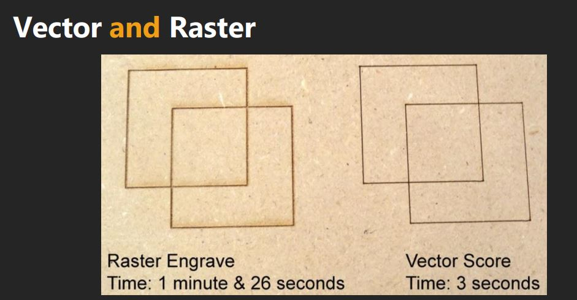
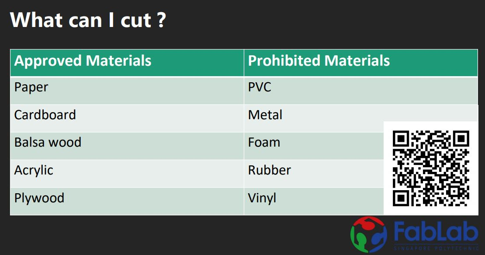

Introduction
Laser cutting is one of the topics that I am the most excited about in Dfab because I always thought that it is very cool that I can engrave my art on wood.
Vector and Raster images

In short , Vector images are made up of clear lines formed through mathematical equations and Raster images are made up of pixels.
A machine will have a easier time going through mathematical equations than a handful of pixels , as a result , Vector images takes a lot shorter to finish than Raster images
Engraving and cutting
A laser cutter is powerful enough to slice through materials or engrave/etch them.
However,in order to tell the laser cutter whether to engrave or slice , there are several things that must be done and to be considered.
what Material you are going to use

What file type to use
Which lines to turn off hairline and which lines not to
- For vector cut , set line weight to hairline
- For vector engraving , set line weight to anything thicker than 0.0001
- For raster engraving, set line weight to anything thicker than 0.0001
Speed , Power , Frequency

In coreldraw ,
if it is vector cutting, set lines to RGB red, R255,G0,B0
if it is vector engraving, set lines to RGB green,R0,G255,B0
Speed , power and frequency are 3 important setting that must be considered when laser cutting.
The slower the speed the laser nozzle move , the deeper it will cut into the material aan vice versa
Power is how powerful the laser cuts at any given moment.So obviously the more power , the deeper it cuts
Frequency or PPI , pusle per minute , is how fast the laser turns on and off while cutting.A high frequency will make a cleaner cut but if material is flammable , it may catch fire.A low frequency will make a less clean cut but lowers the risk of creating a fire.
These 3 settings must be balanced to make the cut you want.
For example, adjusting the power too high might burn away more material than intented , resulting in inaccurate dimensions
So you might want to lower the speed and power to try again.
If it still burns away too much material, more trial and error must be done until you get the results you want.